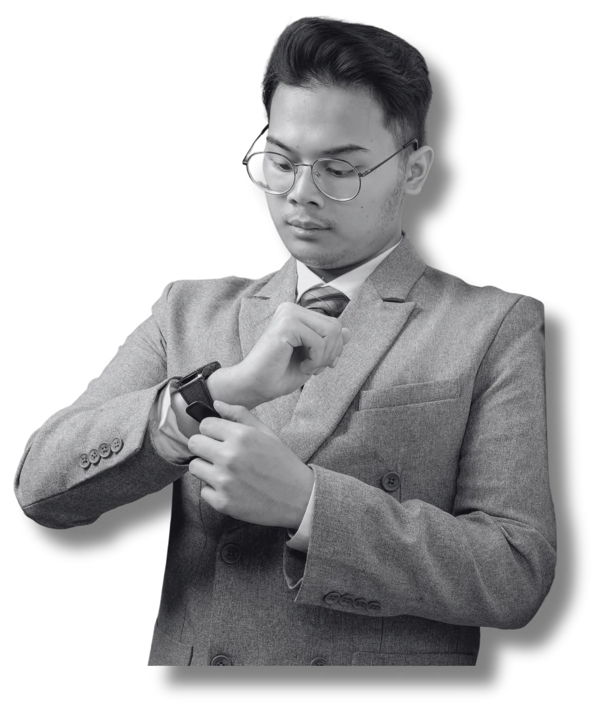

Creative eye.
Analytical
mind.
I’m Adhikara. I work across digital marketing, paid media and visual production—connecting the idea, the audience and the work that brings it to life.

A clear message.
A reason to click.
Different channels.
One connected story.
Content, paid ads, search and customer journeys. Selected professional work alongside the projects where I developed my full-stack marketing practice.
A closer look at the original work.
Browse the full digital marketing portfolio in its original Canva format.
Two sides of
the same craft.
From the decisions behind a campaign to the details inside a frame.
The work behind
the numbers.
HINT, English 1 and RevoU. Explore the context, decisions and measured campaign outcomes.

Some stories
start with
a frame.
Products, people, events and films. Selected visual work from 2018 onward.
*HINT TikTok conversion campaigns, September versus July 2026. Rounded campaign-level outcome; creative and e-commerce teams also contributed.
A camera was
my first
starting point.
I started freelancing in photography and video in 2018. Working on social media then brought me closer to the questions behind the image: who is this for, what should it say, and what should happen next?
Today, my work spans paid advertising, content strategy and production. At English 1, I adapted Meta Ads and content for four Bandung centers. At Somethinc–Beautyhaul, I work on HINT’s paid ads, reporting, budget decisions and CPAS creative briefs. RevoU’s digital marketing program helped connect that practical experience with search, analytics and CRM.
The path so far.
Somethinc–Beautyhaul
Digital Marketing / Paid Ads Specialist · HINT campaigns, performance reporting and creative briefs.
English 1 / HS Group
Digital Marketing Specialist · Meta Ads and content across four Bandung centers.
Bisnis Indonesia Group
Social Media Specialist · Cross-platform planning, content calendars and reporting.
PT Jefferys Indonesia
Social Media Specialist · London Taxi Bikes & Kids, content strategy and in-house production.
Freelance visual production
Photography and videography · Products, portraits, events and brand content.
Telkom University · Digital Public Relations · GPA 3.97/4.00
RevoU · Full-Stack Digital Marketing · 2025